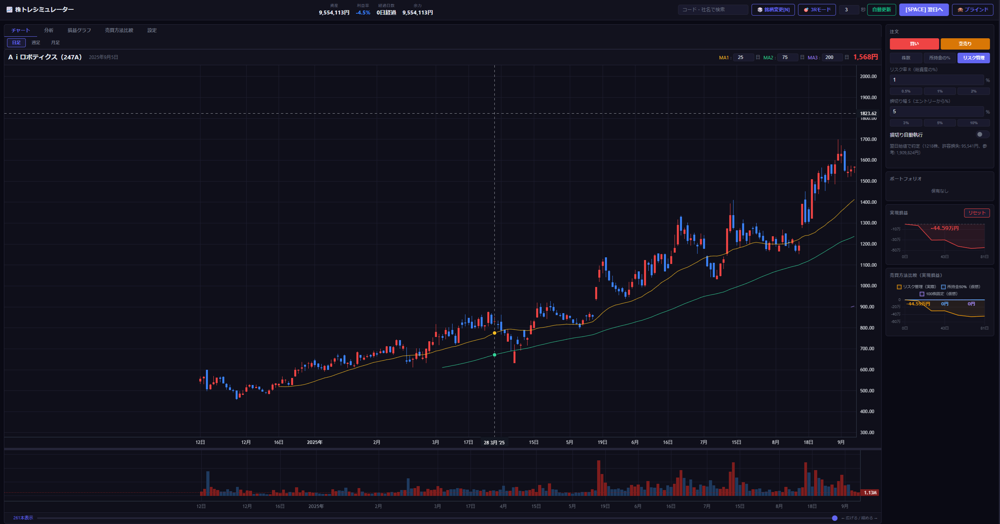

学校では教えてくれない「投資の感覚」を、実際の株価データを使ったゲームで体験させる。 実際のお金を使わずに、何度でも失敗して学べる—— 認知能力がピークの中学生〜20代だからこそ、今が習い時です。
買い切り ／ 永続利用 ／ アップデート無料 ／ リスクゼロで練習できる
※ 株価データは別途 J-Quants（一部無料。長期データについては有料）より取得が必要です

トレード練習で負ける悔しさが、本当の投資力を育てる。
2022年から高校で「金融教育」が必修化されました。しかし知識を覚えるだけでは、本当のお金の感覚は育ちません。
株トレシミュレーターなら、実際のお金を使わずに株式投資の仕組みを体験できます。
「なぜ損切りできなかったのか」「なぜ利益をすぐ取ってしまったのか」——仮想資金で何度も悔しい思いをするからこそ、本物の相場で冷静に判断できるようになる。
悔しさを感じながら繰り返すことで、本物の判断力が育ちます。
感情を動かす失敗体験が深い理解を生む——これは感覚論ではなく、複数の査読論文が裏付けるエビデンスです。
投資判断には、チャートを素早く読む情報処理速度と、 複数の情報を同時に保持する作業記憶が不可欠です。 学術研究によると、これらの認知能力は10代後半〜20歳前後にピークを迎え、 その後は緩やかに低下していきます。 今が、最も習得コストが低いタイミングです。
実際の日本株価データを使い、お金を失わずにトレードを体験。 自分の取引を記録・分析して、勝ちパターンと負けパターンを発見できます。
日本株の実際のOHLCV（始値・高値・安値・終値・出来高）データを使用。「トヨタって株価どうやって動くの？」という会話が生まれます。
同じ銘柄を時期をずらして3回トレード。自分のパターンがどんな局面でも通用するか、繰り返し検証できます。
タブ切替で時間足を変更。大局観を週足・月足で確認しながら、日足でエントリーを判断するトレードができます。
損失直後の衝動的エントリーを自動で検出。「感情に流された」トレードのパターンを数値で振り返れます。
損切り幅・リスク率から最適な株数を自動計算。「何株買うか」というポジションサイジングの感覚を身体で覚えられます。
勝率・平均損益・ホールド日数など多角的に分析。自分の強みと弱みが一目でわかります。
ランダム選択または銘柄コードで指定。「この会社で練習しよう」と親子で選んでも楽しい。
スペースキー1つで1日進む。チャートを見ながら買い・売りのタイミングを判断する。
買い・空売り・決済。リスク管理計算で株数を決めてエントリー。失敗しても仮想資金だから大丈夫。
損益グラフ・イベント分析で自分の癖を把握。「なぜ失敗したか」を考える習慣が身につく。
このサイクルを繰り返すだけ。何度でも、何銘柄でも。
月額なし・買い切り・永続利用。一度購入すれば、ずっと使い続けられます。
🔒 Stripe による安全な決済 ／ 購入後すぐにダウンロード可能
認知能力のピークは今だけ。学校では教えてくれない「投資の体験」を、今。
購入する — ¥24,800（買い切り）ご質問は こちらからお問い合わせ ください